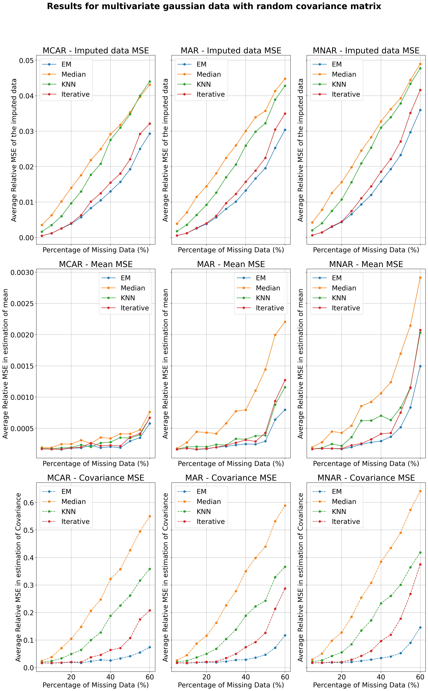
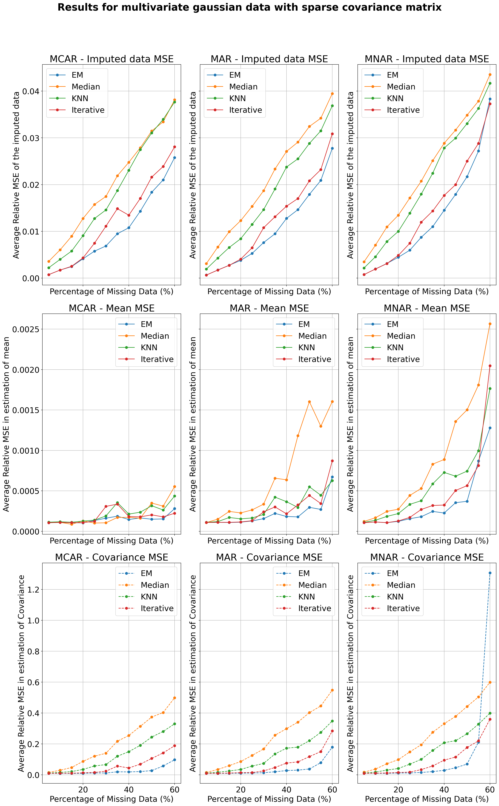
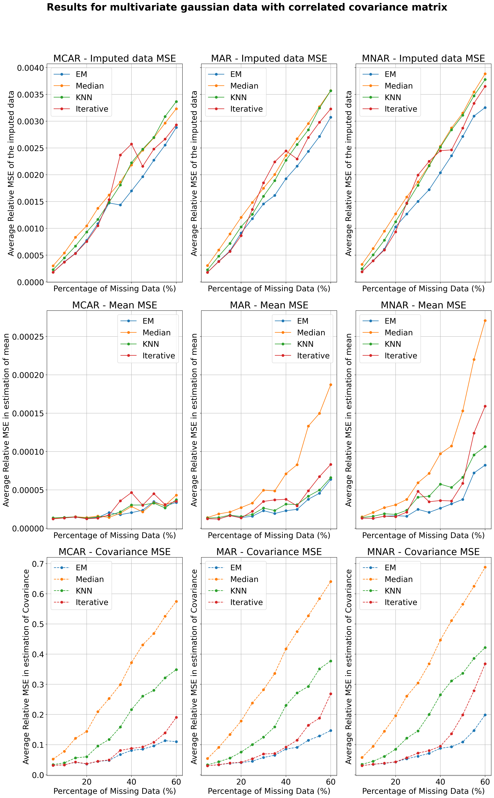
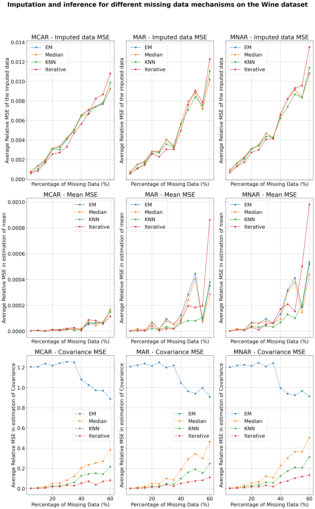
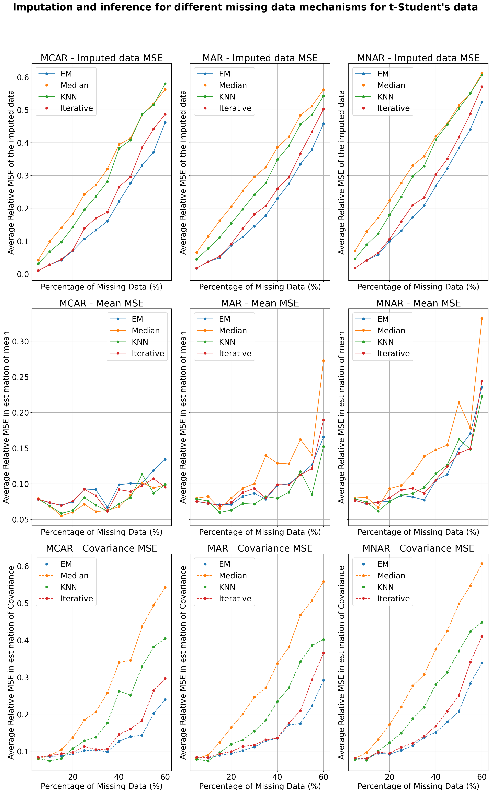
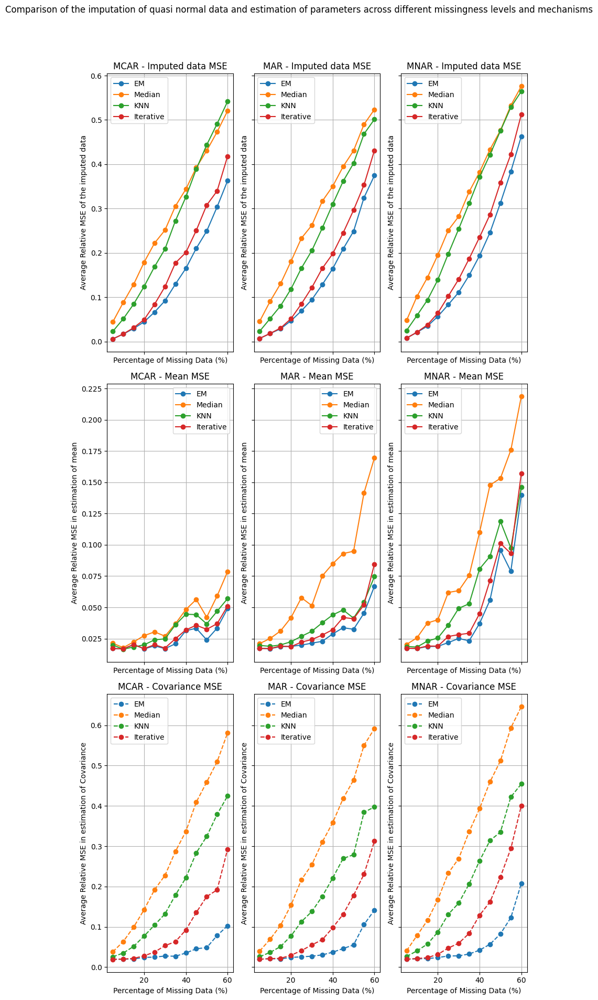

Main Project
EM algorithm for Gaussian missing data
Abstract
The EM algorithm is a valuable statistical tool for performing inference on incomplete data. It can also be used for imputation. We will investigate under which conditions its implementation for incomplete Gaussian data performs best. We will compare with other popular imputation methods, and look at how the EM algorithm matches up in terms of imputation and inference.
1 Introduction
Missing data points are common in applications and real life data sets, especially in Economics, Political and Social Sciences. This is either because some entities do not want to share data, or because they are not collected. Technical reasons could also cause missing data, such as machine failures or non-responses. Missing data can significantly affect the conclusions drawn from a data set, and uncertainty about the conclusions increases as the proportion of missing data increases. Various methods allow to perform inference on incomplete data, among which there is the Expectation-Maximization (EM) algorithm. The EM also permits replacing the missing data points by estimates (imputation). We will compare the EM to other imputation methods, and also compare EM inference to inference performed on imputed data (using other imputation methods).
In this report, we will focus on the EM algorithm for Gaussian data. We will compare it with other methods of imputation, such as Median Imputation, K Nearest Neighbors (KNN), and Iterative Imputation (also known as Multiple Imputation by Chained Equations, MICE). We will also compare the performance over different missing data mechanisms. Finally, we will see how much the distributional assumptions required by the EM algorithm can affect the imputation and inference in a real life data set (and briefly mention synthetic Student’s-t distributed data).
2 The EM Algorithm
In this section, we present the EM-algorithm in general (Dempster et al., 2018), and then present the specifics of implementing the algorithm in the special case of a multivariate normal with missing data.
2.1 General setup
Let’s say we observe some data from a survey with lots of questions. This could be in a regression setup, for example where we use the answers from some questions to predict the answer of a question of interest (“Have you ever had a heart attack?”, for example), but it could also be something else and we are just interested in estimating some parameters of the data. This could be the mean vector and covariance matrix. It’s very common for participants not to be asked all the questions.
Mathematically, the responses to the survey containing p questions correspond to a random vector
\overset{\to}{X}=\left(X_1,\dots,X_p\right)\sim F_{\overset{\to}{X}}
with some distribution. Some of the X_i are unknown, missing. This makes it harder to infer the parameters of interest of the data.
We gather all the independent observations (in the survey example, one observation is a, potentially partially, filled out survey) in the rows of a (N,p) dimensional data matrix \mathbf{X} .
Typically, without the presence of missing data, we model the data as coming from a parametric distribution with density f(x|\theta) and estimate the parameters by maximizing the (log)likelihood. In the presence of missing data, we cannot calculate the complete loglikelihood \ell_{\text{comp}}(\theta). We have to work with the likelihood of the observed data, which we denote (as a random variable) X_{\text{obs}} ; this corresponds to all the entries of the data matrix which are not missing. We know the realization of this random variable is x_{\text{obs}}. The random variable X_{\text{miss}} corresponds to the missing entries.
Explicitly, the write the observed and complete loglikelihoods as below.
\ell_{\text{comp}}(\theta):=\log f(X_{\text{obs}},X_{\text{miss}}|\theta)
\ell_{\text{obs}}(\theta):=\log f(X_{\text{miss}}|\theta,X_{\text{obs}}=x_{\text{obs}})
Typically, the complete loglikelihood is very nice to optimize, but we cannot work with it because we don’t know the missing data. The observed loglikelihood is not nice to optimize.
The EM-algorithm is an iterative algorithm that allows us to optimize the observed loglikelihood. It does this by optimizing the expected complete loglikelihood \mathbb{E_{\theta_0}}\left[\ell_{\text{comp}}(\theta)\right|X_{\text{obs}}] with respect to \theta. The expectation is taken with respect to the conditional distribution of the missing data given the observed data and an initial estimate \theta_0 of \theta.
The EM algorithm is in two steps. First, choose an initial estimate \theta_0 of \theta. Then, iterate the following two steps until convergence:
- E-step: Calculate \mathbb{E}_{\theta_{l-1}}[\ell_{\text{comp}}(\theta)|X_{\text{obs}}]=:Q(\theta,\theta_{l-1})
- M-step: Find \theta_l that maximizes Q(\theta,\theta_{l-1}).
One can show that the sequence of thetas keeps augmenting \ell_{\text{obs}}(\theta), which is good for optimization.
2.2 EM for a multivariate normal with missing data
This section essentially follows the course notes (Math 517 Course, 2023).
Now suppose the random vector \overset{\to}{X}=\left(X_1,\dots,X_p\right)\sim N_p(\mu,\Sigma)
is multivariate normal. The i-th row of the data matrix \mathbf{X} is the realization x^{(i)} of the random vector \overset{\to}{X}^{(i)}. We shall omit the arrow for simplicity of notation.
Then we obtain \ell_{\text{comp}}(\mu,\Sigma)=\sum_{n=1}^n\log f_{\overset{\to}{X}}(X^{(n)}|\mu,\Sigma)\equiv -N/2 \log(\det(\Sigma))+\frac{1}{2}\sum_{n=1}^N (x^{(n)}-\mu)^T\Sigma^{-1}(x^{(n)}-\mu)
Given that the summands are scalar, we can take the trace of the summands and use the properties of the trace, so that when we take the expectation conditional on the observed data, we get Q((\mu,\Sigma);(\mu_{l-1},\Sigma_{l-1}))\equiv -N/2 \log(\det(\Sigma)) +\frac{1}{2}\sum_{n=1}^N tr\left\{\mathbb{E}_{(\mu_{l-1},\Sigma_{l-1})}\left[(X^{(n)}-\mu)(X^{(n)}-\mu)^T|x_{\text{obs}}\right]\Sigma^{-1}\right\}
2.3 E-step
We denote \hat{x}^{(n)(l)}=\mathbb{E}_{(\mu_{l},\Sigma_{l})}\left[ X^{(n)}|X_{\text{obs}}=x_{\text{obs}} \right]. Consider \hat{X}^{(n)(l)}=\mathbb{E}_{(\mu_{l},\Sigma_{l})}\left[ X^{(n)}|X_{\text{obs}}\right] the corresponding random variable.
It’s a classical result that if we have a multivariate Gaussian Z=(Z_1,Z_2), with mean \begin{pmatrix}\mu_1\\\mu_2 \end{pmatrix} and covariance \begin{pmatrix} \Sigma_{11}&&\Sigma_{12} \\ \Sigma_{21}&&\Sigma_{22} \end{pmatrix}, then Z_2|Z_1=z_1 is a random variable with a N(\mu_2+\Sigma_{21}\Sigma_{11}^{-1}(z_1-\mu_1),\Sigma_{2.1}) distribution, where \Sigma_{2.1}=\Sigma_{22}-\Sigma_{21}\Sigma_{11}^{-1}\Sigma_{12}.
Hence we can calculate \hat{x}^{(n)(l)}.
We can then write \begin{aligned} (X^{(n)}-\mu)(X^{(n)}-\mu)^T &= \left((X^{(n)}-\hat{x}^{(n)(l)})+(\hat{x}^{(n)(l)}-\mu)\right)\left((X^{(n)}-\hat{x}^{(n)(l)})+(\hat{x}^{(n)(l)}-\mu)\right)^T \\ &= (X^{(n)}-\hat{x}^{(n)(l)})(X^{(n)}-\hat{x}^{(n)(l)})^T+(\hat{x}^{(n)(l)}-\mu)(\hat{x}^{(n)(l)}-\mu)^T \\ &\quad+(X^{(n)}-\hat{x}^{(n)(l)})(\hat{x}^{(n)(l)}-\mu)^T+(\hat{x}^{(n)(l)}-\mu)(X^{(n)}-\hat{x}^{(n)(l)})^T \end{aligned}
Finally, taking the conditional expectation we obtain (as in the expression for Q, so with l-1)
\begin{aligned} \mathbb{E}_{(\mu_{l-1},\Sigma_{l-1})}\left[(X^{(n)}-\mu)(X^{(n)}-\mu)^T|x_{\text{obs}}\right] &= \mathbb{E}_{(\mu_{l-1},\Sigma_{l-1})}\left[(X^{(n)}-\hat{x}^{(n)(l-1)})(X^{(n)}-\hat{x}^{(n)(l-1)})^T|x_{\text{obs}}\right] \\ &+ (\hat{x}^{(n)(l-1)}-\mu)(\hat{x}^{(n)(l-1)}-\mu)^T \end{aligned}
Note that the first term is the conditional covariance of X^{(n)} given the realization X_{\text{obs}}=x_{\text{obs}}. Let’s denote this matrix C^{(n)(l)}.
We can write
\begin{aligned} Q((\mu,\Sigma);(\mu_{l-1},\Sigma_{l-1})) &\equiv \underbrace{-\frac{N}{2} \log(\det(\Sigma)) + \frac{1}{2}\sum_{n=1}^N \text{tr}\left\{(x^{(n)(l-1)}-\mu)(x^{(n)(l-1)}-\mu)^T \Sigma^{-1}\right\}}_{(1)} \\ &+ \underbrace{\frac{1}{2}\sum_{n=1}^N \text{tr}\left\{C^{(n)(l-1)}\Sigma^{-1}\right\}}_{(2)} \end{aligned}
We recognize the first term as a regular Gaussian loglikelihood. The second does not depend on \mu. We know that the \mu which maximizes (1) (and hence (1)+(2)) doesn’t depend on \Sigma, and is given by \mu^{(l)}=\frac{1}{N}\sum_{n=1}^N(x^{(n)(l-1)})^T. To find \arg\max\Sigma, we use the property (which is not difficult to show) \frac{\partial}{\partial A}tr(AB)=B^T. We also use the fact that \frac{\partial \det(A)}{\partial A}=\det (A)A. Differentiating with respect to \Sigma, we hence obtain -\frac{N}{2} \Sigma+\frac{1}{2}\sum_{n=1}^N(x^{(n)(l-1)}-\mu)(x^{(n)(l-1)}-\mu)^T+\frac{1}{2}\sum_{n=1}^N C^{(n)(l-1)}.
Setting the derivative to zero, we obtain the update rule for \Sigma:
\Sigma^{(l)}=\frac{1}{N}\sum_{n=1}^N(\hat{x}^{(n)(l-1)}-\mu^{(l)})(\hat{x}^{(n)(l-1)}-\mu^{(l)})^T+ C^{(n)(l-1)}
is the matrix which maximizes Q((\mu,\Sigma);(\mu_{l-1},\Sigma_{l-1})).
So to resume, an iteration is as follows:
Starting from current estimates \mu^{(l-1)} and \Sigma^{(l-1)}, calculate \hat{x}^{(n)(l-1)}=\mathbb{E}_{(\mu_{l-1},\Sigma_{l-1})}\left[ X^{(n)}|x_{\text{obs}} \right].
Use this vector to calculate the updated parameter estimates \mu^{(l)} and \Sigma^{(l)} according to the formulas above.
We remark that this is \textit{not} the same as imputing the values of \hat{x}^{(n)(l-1)} into the corresponding missing values of the data matrix and then taking the MLEs of the complete Gaussian (empirical mean and covariance) to update the parameters. However, we \textit{do} need to calculate \hat{x}^{(n)(l-1)} at each iteration. This implies that, as a by-product of the algorithm, at the final iteration of the algorithm, we obtain \hat{x}^{(n)(L-1)}, which is a good estimate of the missing values of the data matrix. In this sense, the EM algorithm can also be used for imputation, not just parameter estimation. How well the algorithm imputes the data is also basically simply another measure of how well it has estimated the parameters.
3 Analyzing the suitability of the EM algorithm for parameter inference in the multivariate Gaussian setting.
3.1 Different patterns of missingness
We now discuss the different patterns of missingness that can occur in a dataset.
Consider a data set X \in \Omega_1 \times \cdots \times \Omega_p which is a concatenation of d columns X_j \in \Omega_j, where \Omega_j is the support of the variable X_j which is of dimension dim(\Omega_j) = n, representing the number of observations. This gives us a dataset of dimension n \times d. For example, one could have \Omega_j = \mathbb{R}^n, \mathbb{Z}^n, \mathcal{S}^n, where \mathcal{S} = \{s_1, ...., s_k\}, for some quantitative or qualitative values s_i, i=1..., k; ~ k \in \mathbb{N}
Consider the response matrix R\in \{0,1\}^{n \times d} defined by R_{ij} = 1 if X_{ij} is observed and 0 otherwise. We now partition the data matrix X = \{X^{obs}, X^{miss}\}, where X^{obs} and X^{miss} are the matrices containing the observed and missing values: X^{obs}_{ij} = X_{ij} I_{\{R_{ij}=1\}}, X^{miss}_{ij} = X_{ij} I_{\{R_{ij}=0\}}.
In the code, the matrix R is seen as a boolean tensor called a mask and has value True at position (i,j), whenever X_{ij}, the i-th observation of the j-th variable is observed. In order to generate missing data, one has to generate a mask R and then apply it to the complete data X. If one could easily generate a mask from n \times d independent Bernouilli samples. To generate a mask R in a non-independent way, one can use a logistic model with a sigmoid function. This consists in using the sigmoid function \sigma(z) = \frac{1}{1 + e^{-z}}. One will generate from a d-dimensional standard normal distribution weights W and find a vector of intercepts b \in \mathbb{R}^n such that \sigma(WX + b) \in (0,1)^n. We can then define the probability \mathbb{P}(R_{ij} = 1 \mid X) = \sigma((WX)_i + b_i) and generate a mask R respecting these probabilities. Observe that the missingness R\_{ij} of the i-th observation of the variable j depends on the other variables X_{ij}, j=1,...,d.
There exists different types of missing data mechanisms which fall into the following categories.
3.2 Missing completely at random (MCAR)
Observations are said to be be missing completely at random (MCAR) if R \perp X that is if \mathbb{P}(R \in A \mid X^{obs}, X^{miss}) = \mathbb{P}(R \in A) for any A \in \sigma\{0,1\}^{n \times d}. To generate such missingness, one would start form a complete data matrix X and generate an independent matrix R.
In the code, the mask corresponding to R is generated independently from a n \times d uniform distribution and a certain probabibility of observed values p_{obs}. With such a mask, the data will have in expectation a proportion of missing data of p_{miss} = 1 - p_{obs}. Clearly, here the missingness does not depend on the variables.
3.3 Missing at random (MAR)
Observations are said to be be missing at random (MAR) if R \perp X^{miss} that is if \mathbb{P}(R \in A \mid X^{obs}, X^{miss}) = \mathbb{P}(R \in A \mid X^{obs}) for any A \in \sigma\{0,1\}^{n \times p}. To generate such missingness, one would start form a complete data matrix X and generate a matrix R independent from X^{miss} but not from the observed data X^{obs}.
To generate such missingness, one again needs to generate a mask R that depends on the observed values but not on the missing ones. To do so, we used a mask by selecting at random (uniformly) p_{obs} \cdot d variables (or columns) which will have no missing values. For the other variables, we use a logistic model to generate missingness with a fixed missing probability common for each missing variables. This then gives us a MAR response matrix.
3.4 Missing not at random (MNAR)
If missingness is not MCAR or MAR, it is said to be missing not at random (MNAR). To generate such data, one has various options. The first one, is to consider a self-masked model which will apply the logistic model to all variables, meaning that every variable will potentially have missing values.
The second one is to select a certain proportion of variables which will be used as inputs for the logistic model and the remaining variables will have missing probabilities according to the logistic model. Then a MCAR mechanism is applied to the input variables. After this transformation one indeed has a dependence of the missingness of the two groups of variables and hence the mask R depends on missing observations (X^{miss}) and on the observed ones (X^{obs}).
The code used to generate missing data and its description was taken from (Rmisstastic).
4 First results
4.1 Other imputation methods
We started by simulating data from a 10-dimensional Gaussian with random N(0,10\cdot I_5) mean. We also randomly generated a matrix A with random entries from N(0,1) and chose A^T A as the true covariance matrix we simulated the data from. The goal is to recover the true mean and covariance matrix from the data. We then randomly removed a certain percentage of the data according to a certain pattern of missingness, using functions from an external library for this purpose, as explained above. For each of these different missing data mechanisms, we analyzed the results.
We wanted to compare the results of the EM algorithm with other ways of handling missing data. As such, we will compare it to median imputation, KNN, and Iterative imputation.
In the realm of data imputation, median imputation stands out for its simplicity, particularly in scenarios where the data distribution is not symmetric. This method involves replacing missing values in a dataset with the median of the observed (non-missing) values within the same feature. The rationale behind this approach is grounded in the statistical properties of the median as a measure of central tendency, which, unlike the mean, is not skewed by outliers. Therefore, in distributions that are not symmetrical or when outliers are present, the median provides a more robust estimate of the central location of the data.
The simplicity of median imputation lies in its non-parametric nature – it doesn’t assume an underlying distribution for the data. However, this simplicity comes at the cost of certain limitations. Most notably, median imputation treats each feature independently and does not account for potential correlations between different features. This independent treatment might not be ideal in datasets where variables are interrelated. Additionally, applying median imputation extensively, especially in cases with a significant amount of missing data, can lead to an underestimation of the variability in the data and may result in biased estimates. Despite these limitations, median imputation remains a popular choice in preliminary data cleaning and exploratory data analysis, especially when dealing with non-normally distributed data or data with outliers.
K-Nearest Neighbors (KNN) Imputation (Troyanskaya et al., 2001) is a method employed in statistics and data science to impute missing values in datasets. This non-parametric technique assumes that the dataset contains similar data points, and these similarities can be leveraged to estimate missing values.
The KNN imputation method operates on the principle that the missing values of a data point can be inferred from the ‘k’ nearest points in the feature space. These nearest neighbors are determined based on the non-missing features of the data point in question. The method uses distance metrics to ascertain the closeness of data points. Commonly used distance metrics in KNN are:
- Euclidean Distance: Defined as the square root of the sum of squared differences between two points in an m-dimensional space, given by the formula: d(\mathbf{x}_i, \mathbf{x}_j) = \sqrt{\sum_{k=1}^{m}(x_{ik} - x_{jk})^2}
- Manhattan Distance: Calculated as the sum of the absolute differences of their coordinates, expressed as: d(\mathbf{x}_i, \mathbf{x}_j) = \sum_{k=1}^{m}|x_{ik} - x_{jk}|
- Minkowski Distance: A generalized form of distance, which becomes Euclidean or Manhattan distance for specific parameter values, represented as: d(\mathbf{x}_i, \mathbf{x}_j) = \left( \sum_{k=1}^{m}|x_{ik} - x_{jk}|^p \right)^{\frac{1}{p}}
The procedure for KNN imputation includes normalization of the data to ensure uniform contribution of each feature to the distance calculations. For an observation with missing values, the algorithm computes distances to other data points considering only the non-missing features. It then identifies the ‘k’ nearest neighbors based on these distances. The missing values are imputed using a statistical measure (like mean or median) derived from the values of these neighbors.
While KNN imputation is versatile and adaptable to the data’s structure, it has its limitations. The method can be computationally intensive for large datasets, and its performance is sensitive to outliers. The choice of ‘k’ is critical and can significantly influence the imputation’s accuracy. In high-dimensional spaces, proximity may become less meaningful, a problem known as the curse of dimensionality.
We decided to use the default k=5 for our code.
KNN imputation is particularly useful in scenarios where the data’s underlying structure does not conform to linear assumptions, making it a valuable tool for handling missing data in diverse datasets.
Iterative Imputation in Scikit-learn, an implementation of the Multiple Imputation by Chained Equations (MICE) algorithm (Buuren and Groothuis-Oudshoorn, 2011), is a sophisticated technique for handling missing data in datasets. This approach is particularly effective when dealing with data that are not Missing Completely At Random (MCAR) but rather Missing At Random (MAR) or Missing Not At Random (MNAR).
The fundamental concept of Iterative Imputation revolves around modeling each feature with missing values as a dependent variable in a regression framework. The algorithm initially fills in missing values using simple imputation methods such as mean, median, or mode. This initial imputation creates a complete but approximate dataset. The algorithm then refines these imputations iteratively, treating each feature with missing data as a dependent variable in a regression model. The other features in the dataset act as independent variables or predictors in this model.
Mathematically, the iterative process can be described as follows:
Initial Imputation: Missing values in the dataset are imputed using a simple method (e.g., mean, median), we used median imputation in our code. This step results in a complete dataset, denoted as X^{(0)}.
Iterative Process: For each feature X_j with missing values, the algorithm performs the following steps:
- Treat X_j as a dependent variable and other features X_{-j} as independent variables.
- Build a regression model using X_{-j} to predict X_j.
- Update the imputed values of X_j in the dataset using the model’s predictions.
Repeat: This process is repeated, cycling through all features with missing values multiple times.
Each iteration refines the imputations based on the relationships learned from the regression models. The regression models can vary: linear regression is commonly used for continuous data, while logistic regression or other classification models are utilized for categorical data. The choice of regression model significantly influences the imputation quality. We used the default Baysian rifge regression for our code.
In Scikit-learn’s Iterative Imputer, flexibility is provided in terms of the regression estimator (e.g., BayesianRidge, DecisionTreeRegressor), maximum number of imputation rounds (Max Iter), and convergence criterion (Tolerance). The iteration continues until either the change in imputed values across iterations falls below the specified tolerance level or the maximum number of iterations is reached.
In our code, we used BayesianRidge as our regression estimator, a maximum of 100 iterations, and a tolerance of 0.001.
This approach is especially powerful in scenarios where the dataset features complex relationships among variables. Its effectiveness, however, is highly dependent on the appropriate selection of regression models and the careful handling of convergence criteria. Despite being computationally demanding, Iterative Imputer is a valuable tool when simple imputation methods might not be sufficient.
4.2 Comparison metrics
The first measure we used to compare these different imputation (and hence inference) methods was the Relative Mean Squared Error (rMSE) (not to be confused with Root Mean Square Error, the square root of the MSE, hence we denote it rMSE and not RMSE) of the imputed data matrix as compared to the true data matrix (we have access to the true data matrix since we first simulated it and then removed values). This does not directly compare the estimated mean and covariance with the true mean and covariance. However, as stated above, it is a good proxy because we expect the imputation of the EM algorithm to be good exactly when its inference was good, and because the quality of the inference of the imputation methods depends directly on how good their imputation is. In a second step, we will also look at the accuracy of our estimates directly.
We remove varying percentages of our simulated data according to one of the three missing data mechanisms above, and calculate the rMSE of the imputed data, mean, and covariance for that percentage of missingness.
For the mean, for example, denoting \mu the true mean, we calculate
rMSE= \frac{1/n\sum (\hat{\mu}_i-\mu_i)^2}{1/n\sum\mu_i^2} =\frac{\Vert \hat{\mu}-\mu \Vert^2}{\Vert \mu \Vert^2}
and the same for the imputed data and covariance with the Frobenius matrix norm.
For Missing Completely At Random data, we see that the EM algorithm performs best, closely followed by the multiple imputation method. The KNNimputation method seem to capture some of the relationship between the features and as such usually performs better than the median imputation method, which does not capture any relationship between features. Surprisingly, however, the rMSE of the KNN method seems to perform worse than median at higher level of missing data. We also see that the performance declines as the percentage of missing data increases, but not dramatically. This is inevitable as we have less data to work with.
For Missing At Random data, we see that the performance of the EM algorithm is very similar to the graph above. This shows that the EM algorithm can indeed deal with MAR data. We also notice that the Median imputation seem to perform significantly worse in the rMSE of the mean for MAR compared to MCAR data and that the rMSE of the mean for the Iterative method performs worse than KNN at higher level of data missingness, possibly due to the fact that the method stopped by reaching the maximum iteration instead of converging.
While the comparative performance of the different imputation methods do not change much for Missing Not At Random data compared to MAR, the performance of all the methods are worse, especially when looking at rMSE of the mean. This is as expected, because no method can reliably perform inference on MNAR (in generality) without somehow correctly modeling the mechanism which produces the missingness.
5 The impact of different types of covariance matrices on the EM algorithm
To analyze further the situations in which the EM algorithm performs well or not so well, we repeated this analysis for different types of covariance matrices. The idea is that what the EM algorithm is particularly good at is estimating the covariance matrix, and correctly imputing the data in a Gaussian setting, while for example the MICE method is more general, but potentially less adept in the Gaussian setting at doing this.
For this we generated two types of covariance matrix. First, we generated a “sparse” 5x5 covariance matrix, which contained an important proportion of zeros. Such a matrix was generated by creating a lower triangular Cholesky factor, with lower triangular entries that were either random or had a certain probability of being zero, and then doing the cross-product to obtain the covariance.
For this sparse covariance structure, we see that the EM algorithm does not enjoy the clear performance advantage it did previously. In general, all the methods we compared perform similarly for imputation. In fact, median imputation was often best. This is not too surprising: indeed, consider the most extreme “sparse” covariance: a diagonal matrix. In this case, the components of the Gaussian random vector are independent, and so the MLE for the mean of the i-th component is simply the sample mean of the i-th column of the data matrix. The best prediction we can make for a missing entry in the data matrix is then the mean of its column, ie the mean imputation method, (mean and median are essentially the same for Gaussians with a decent amount of data). Hence in this case, we expect median imputation to perform well or even best for imputation. In theory, the EM algorithm should also be able to do the same thing as median imputation, but as it also has to estimate the covariance matrix and inevitably will make a bit of error there, it can actually be worse. For the first time, we see that the multiple imputation method tends to perform a bit better than EM for all missing data mechanisms.

Secondly, we wanted to analyze the performance of the EM algorithm for highly correlated multivariate Gaussian data. For this, we used a very specific type of correlation matrix. Suppose you have a 2D grid of points, and each point is assigned a value from a multivariate distribution. For example, a 3x3 grid corresponds to a multivariate 9-dimensional Gaussian distribution. The correlation of points is determined by their euclidean distance. We set the correlation to \exp\left(\frac{\Vert x_i-x_j\Vert}{h} \right) with h=1.5. The resulting multivariate normal is very correlated.

With this correlation structure, the EM algorithm becomes superior again. However, the results are very similar to just randomly generating a covariance; in hindsight, this makes sense because a randomly generated covariance matrix is going to be highly correlated as well.
6 Non-Gaussian Distributions
6.1 Real Data with no distribution assumption
We now try to perform the same analysis starting from a complete dataset of unknown distribution. In fact, the EM algorithm relies on the assumption that the underlying distribution is known, which is not the case for the other methods we are comparing to here.
We encountered numerical problems in updating the covariance in the EM algorithm in this application. When calculating the conditional covariance which we denoted C^{(n)(l-1)} in chapter 2, we split the covariance matrix into four blocks according to the missing and observed data, and we calculate the conditional covariance of the missing data with the formula \Sigma_{2.1}=\Sigma_{22}-\Sigma_{21}\Sigma_{11}^{-1}\Sigma_{12}
which is the source of our numerical problems. To counter this, we regularized our covariance at every iteration. If the ratio between the largest and smallest eigenvalue became too big, we added a small fraction of the largest eigenvalue to the diagonal, to decrease the ratio. This seemed to solve our issues. The data set considered is not the source of interest and will not be described, the goal is simply to test the methods on data on which we cannot make any a priori assumption on the distribution. We extracted a subset of this data set about wine quality, considering 300 observations of some variables (fixed acidity, volitile acidity, density and pH). The data set is available at (Cortez and Reis, 2009).
We apply the Shapiro-Wilk test for normality which rejected the assumption of normality with a high certainty (the p-value of order 10^{-35}), as expected. As in the previous scenarios, we imputed the data and made inference on the mean and the covariance matrix using various methods. The results are shown in the following figure.

Quite surprisingly, the EM algorithm imputes as well as the other methods, despite them not relying on the assumption of Gaussianity (which is not satisfied here).
For the mean estimation, all methods including EM are stable, even for large amounts of missing data. The graphs for the MAR and MNAR mechanisms show much more instability for all methods, and the EM algorithm tends to perform poorly.
For the covariance, we observe that the Iterative method outperforms the others for all missing data mechanisms. While the Median, KNN and Iterative methods seem to convergence to the true covariance, at least for low missing data percentages, the EM algorithm does not at all (the normalized MSE being of order 1, testifying of a wrong convergence). We suspect that this is due to how the covariance is estimated in th EM algorithm for Gaussian data. Recall that the formula to update our covariance estimate in chapter 2 was \Sigma^{(l)}=\frac{1}{N}\sum_{n=1}^N(\hat{x}^{(n)(l-1)}-\mu^{(l)})(\hat{x}^{(n)(l-1)}-\mu^{(l)})^T+ C^{(n)(l-1)}
where C^{(n)(l-1)}=\mathbb{E}_{\theta^{(l-1)}}\left[(X^{(n)}-\hat{x}^{(n)(l-1)})(X^{(n)}-\hat{x}^{(n)(l-1)})^T |X_{obs}=x_{obs} \right]
was the conditional covariance of the n-th random vector X^{(n)}, given that we know X_{obs}=x_{obs}. Note that, at convergence, this corresponds to the empirical covariance of the imputed data, plus the term C^{(n)(l-1)}. The added term is supposed to account for the fact that, if we simply impute all the terms by their conditional expected value, we end up with less variability than the truth. This is because, if we wanted to simulate the missing values, they would have a normal distribution centered around this mean, and not be exactly equal to it, and this added variability would get eliminated if we ignored C^{(n)(l-1)}. C^{(n)(l-1)} can be calculated from \Sigma^{(l-1)} directly. We suspect that, because this data is not Gaussian, this calculation may not yield something close to the correct conditional covariance, screwing up the results. However, we also cannot completely rule out that our covariance regularization may also be at fault. This could be analyzed further given more time.
6.2 Student’s-t Data
The multivariate Student-t distribution is useful for modeling datasets with heavy tails and is often used in finance. Quite often, especially in finance, the assumption of Gaussianity on Student-t data can lead to bad estimations, we will therefore analyse this.
The multivariate Student-t has the following parameters
- Mean vector \mu: A d-dimensional vector representing the mean of the distribution.
- Scale matrix \Sigma: A positive definite d \times d matrix.
- Degrees of freedom \nu > 2: A scalar value that determines the shape of the distribution’s tails. As \nu increases, the Student-t distribution approaches the normal distribution.
Its density function is given by:
f(\mathbf{x} | \boldsymbol{\mu}, \boldsymbol{\Sigma}, \nu) = \frac{\Gamma\left(\frac{\nu + d}{2}\right)}{\Gamma\left(\frac{\nu}{2}\right) \nu^{\frac{d}{2}} \pi^{\frac{d}{2}} |\boldsymbol{\Sigma}|^{\frac{1}{2}}} \left(1 + \frac{1}{\nu} (\mathbf{x} - \boldsymbol{\mu})^\top \boldsymbol{\Sigma}^{-1} (\mathbf{x} - \boldsymbol{\mu}) \right)^{-\frac{\nu + d}{2}}
where \mathbf{x} is a d-dimensional data vector, \Gamma is the gamma function, and |\Sigma| is the determinant of \Sigma. The covariance is given by \nu \Sigma / (\nu -2).

For Student’s-t data, EM performs roughly as well as, but not better than, the other methods. Note that computationally, our EM implementation is more demanding.
7 Conclusion
We investigated the EM-algorithm’s performance across a variety of situations, focusing on its Gaussian implementation. We analyzed its inference capabilities and compared them to doing inference with imputed data, using various imputation algorithms. We also investigated its suitability for imputation. The EM algorithm performed best or near-best across all settings with Gaussian data. It performed best for MCAR data, although inference on MAR data was nearly as reliable. Surprisingly, for the MNAR mechanism we used in our analysis, the EM algorithm still performed quite well, better than some of the other algorithms did on MAR data - but the decline in performance was still bigger than the difference between MCAR and MAR data. Obviously, if the data were MNAR in a particularly “pathological” way, no algorithm would be able to recover the proper parameters (for example, if all values above a certain threshold vanish, we will inevitably underestimate the mean dramatically, unless we know and account for this). Performance is particularly good when the correlation between variables of the Gaussian random vector is high; the advantage of using the EM algorithm for inference on missing data dwindles if the covariance matrix is “sparse”. A major weakness of the EM algorithm is that it makes distributional assumptions, and requires working with the likelihood when being implemented, while other imputation and inference methods (such as multiple imputation) are more general. This was evident in the Gaussian EM’s failure to estimate the covariance matrix for real-life non-Gaussian data. However, if the misspecification is slight, such as when the data stem from a student distribution with many degrees of freedom, the consequences are not severe. EM inference and imputation is hence a valuable tool for dealing with missing data.
8 Appendix
We also looked at nearly normal data but the result are very similar to the normal data, we therefore do not show them in the main part. This result is shown in the Figure 1 below.

References
Buuren, S. van, and Groothuis-Oudshoorn, K. (2011). Mice: Multivariate imputation by chained equations in r. Journal of Statistical Software 45, 1–67. doi:10.18637/jss.v045.i03.
Cortez, C., Paulo, and Reis, J. (2009). Wine Quality.
Dempster, A. P., Laird, N. M., and Rubin, D. B. (2018). Maximum Likelihood from Incomplete Data Via the EM Algorithm. Journal of the Royal Statistical Society: Series B (Methodological) 39, 1–22. doi:10.1111/j.2517-6161.1977.tb01600.x.
Math 517 Course (2023). Week 6 notes. Available at: https://math-517.github.io/math_517_website/notes/week_06.html.
Rmisstastic How to generate missing values. Available at: https://rmisstastic.netlify.app/how-to/python/generate_html/how%20to%20generate%20missing%20values.
Troyanskaya, O., Cantor, M., Sherlock, G., Brown, P., Hastie, T., Tibshirani, R., et al. (2001). Missing value estimation methods for DNA microarrays . Bioinformatics 17, 520–525. doi:10.1093/bioinformatics/17.6.520.